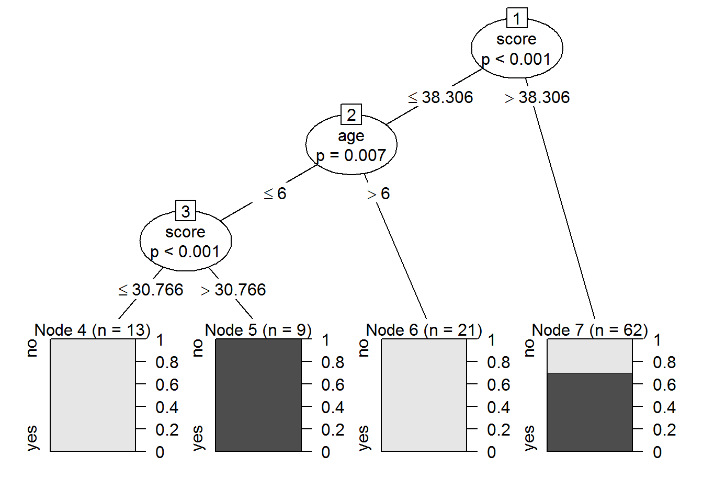
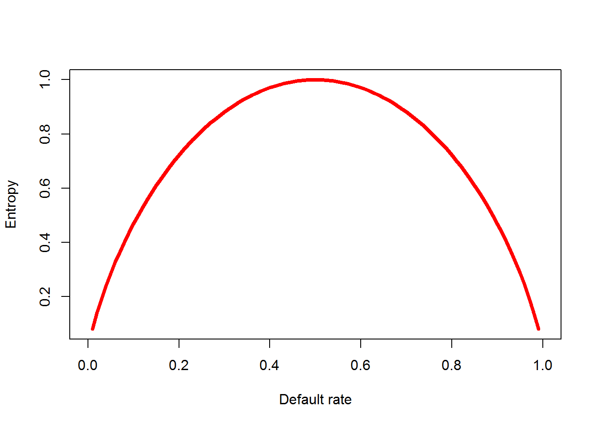

决策树顾名思义就像一颗树，一颗树有根，枝，叶。所以，决策树也有根决策节点，（枝）决策节点，叶节点。其中枝决策节点这名字是我自己取的。叶节点为什么不叫叶决策节点呢？因为到了叶节点就已经分出类了，不需要再做决策了。

如上图就是一个决策树，一共有7个节点。其中节点1是根决策节点，节点2,3是（枝）决策节点，节点4,5,6,7是是叶节点。
建立决策树的第一个任务是要确定根据哪个特征（也就是自变量）就行分割。一般来说，选择能产生最大的信息增益的特征进行分割。下面解释什么是信息增益。
信息熵这个词是C．E．香农从热力学中借用过来的。热力学中的热熵是表示分子状态混乱程度的物理量。香农用信息熵的概念来描述信源的不确定度。公式为：
\(Entropy(S)=\sum_{i=1}^c-p_ilog_2(p_i)\)
其中\(S\)代表数据的分割，比如一群信用卡卡主，有违约和不违约，\(c=2\)的分割。\(p_i\)为样本落入对应分割 \(i\) 的比例（概率），如果违约的是50%，不违约当然也是50%。那么信息熵为：
\(Entropy(DefaultOrNot)=-0.5 \times log_2(0.5) - 0.5 \times log_2(0.5)=1\)
我们可以考察有两个类的分割的所有可能的熵，如下图。可以看到，熵总是在0到1之间，0代表信息纯度高，也就是信息内容多，意义明确。在本例中，如果一个人的违约率为100%或0%，那么也就意味着我们知道了这个人是否违约，很显然，比起50%的概率，信息的不确定性低了。

当按某个特征\(F\)分了\(d\)类以后，比如说，特征\(F\)为卡主的年薪，有\(d=2\)的特征类，年薪分别为>500K和<=500K，分别占样本数的20%和80%。违约率分别为40%和52.5%(注意违约率一定满足\(0.525 \times 0.8 + 0.2 \times 0.4 = 0.5\))，那么对于\(F_j\)的熵为：
\(Entropy(F_j)=\sum_{i=1}^c-p_{ij}log_2(p_{ij})\)，其中：
# Entropy(F1) card owner of annual salary >500k
Entropy_f1 <- -0.4 * log2(0.4) - (1-0.4) * log2(1-0.4)
# Entropy(F2) card owner of annual salary <=500k
Entropy_f2 <- -0.525 * log2(0.525) - (1-0.525) * log2(1-0.525)\(Entropy(S_2)=\sum_{j=1}^d{w_j}Entropy(F_j)\)，其中： \(w_j\)为第\(j\)个特征类占总样本的比例
# Entropy(S1) based on feature F (annual salary)
entropy_s2 <- 0.2 * Entropy_f1 + 0.8 * Entropy_f2
entropy_s2## [1] 0.9927468\(InfoGain(F)=Entropy(S)-Entropy(S_2) = 1 - 0.9927468 = 0.0072532\)
一棵树可以无限制的增长下去，选择需要分割的特征，知道每个样本都归于一类，当然这样也就过拟合了。所以要修剪。
一旦树达到了一定数量的决策，或者决策点只有少量案例，就停止增长。
如果树生长的过大，根据节点处的错误率修剪让树的大小合适。我们要用的C5.0就是用这种方法。
我将继续使用Naive Bayes用过的数据集audit，要预测的是income这个变量。
library(readr)
adult <- read_csv("adult.csv",na="?")
adult$income = as.factor(adult$income)
str(adult)## Classes 'tbl_df', 'tbl' and 'data.frame': 32561 obs. of 15 variables:
## $ age : int 39 50 38 53 28 37 49 52 31 42 ...
## $ workclass : chr "State-gov" "Self-emp-not-inc" "Private" "Private" ...
## $ fnlwgt : int 77516 83311 215646 234721 338409 284582 160187 209642 45781 159449 ...
## $ education : chr "Bachelors" "Bachelors" "HS-grad" "11th" ...
## $ education_num : int 13 13 9 7 13 14 5 9 14 13 ...
## $ marital_status: chr "Never-married" "Married-civ-spouse" "Divorced" "Married-civ-spouse" ...
## $ occupation : chr "Adm-clerical" "Exec-managerial" "Handlers-cleaners" "Handlers-cleaners" ...
## $ relationship : chr "Not-in-family" "Husband" "Not-in-family" "Husband" ...
## $ race : chr "White" "White" "White" "Black" ...
## $ sex : chr "Male" "Male" "Male" "Male" ...
## $ capital_gain : int 2174 0 0 0 0 0 0 0 14084 5178 ...
## $ capital_loss : int 0 0 0 0 0 0 0 0 0 0 ...
## $ hours_per_week: int 40 13 40 40 40 40 16 45 50 40 ...
## $ native_country: chr "United-States" "United-States" "United-States" "United-States" ...
## $ income : Factor w/ 2 levels "<=50K",">50K": 1 1 1 1 1 1 1 2 2 2 ...在学习NB分类的时候已经探索过了，通过画直方图我们看出了capital_gain这个变量对预测很重要。在这一章可以看到，决策树可以自动帮我们分析出这个结论。这个是它的优点。
# create training and test data
adult_train <- adult[1:21000, ]
adult_test <- adult[21001:32561, ]# load the "C50" library
library(C50)
adult_classifier <- C5.0(income ~ ., data = adult_train)
adult_classifier##
## Call:
## C5.0.formula(formula = income ~ ., data = adult_train)
##
## Classification Tree
## Number of samples: 21000
## Number of predictors: 14
##
## Tree size: 74
##
## Non-standard options: attempt to group attributesadult_predictions <- predict(adult_classifier, adult_test[,-15])可以看到，有74个决策节点。
# load the "gmodels" library
library(gmodels)
# Create the cross tabulation of predicted vs. actual
CrossTable(x = adult_test$income, y = adult_predictions,
prop.chisq=FALSE)##
##
## Cell Contents
## |-------------------------|
## | N |
## | N / Row Total |
## | N / Col Total |
## | N / Table Total |
## |-------------------------|
##
##
## Total Observations in Table: 11561
##
##
## | adult_predictions
## adult_test$income | <=50K | >50K | Row Total |
## ------------------|-----------|-----------|-----------|
## <=50K | 8177 | 547 | 8724 |
## | 0.937 | 0.063 | 0.755 |
## | 0.896 | 0.225 | |
## | 0.707 | 0.047 | |
## ------------------|-----------|-----------|-----------|
## >50K | 953 | 1884 | 2837 |
## | 0.336 | 0.664 | 0.245 |
## | 0.104 | 0.775 | |
## | 0.082 | 0.163 | |
## ------------------|-----------|-----------|-----------|
## Column Total | 9130 | 2431 | 11561 |
## | 0.790 | 0.210 | |
## ------------------|-----------|-----------|-----------|
##
## 模型的准确度为0.707+0.163 =0.87，如果你还记得NB分类的值，没错，0.791！，那是好上了太多。 而且在收入大于50K的人群中，有66.4%的人被挑选出来了。这是一个巨大的提升，我上次改进以后的模型也没有这么高。
#summary model
summary(adult_classifier)##
## Call:
## C5.0.formula(formula = income ~ ., data = adult_train)
##
##
## C5.0 [Release 2.07 GPL Edition] Wed Jan 11 11:04:20 2017
## -------------------------------
##
## Class specified by attribute `outcome'
##
## Read 21000 cases (15 attributes) from undefined.data
##
## Decision tree:
##
## capital_gain > 6849:
## :...relationship in {Not-in-family,Husband,Wife,Unmarried}: >50K (865/10)
## : relationship in {Own-child,Other-relative}:
## : :...capital_gain <= 27828: >50K (18)
## : capital_gain > 27828: <=50K (5)
## capital_gain <= 6849:
## :...relationship in {Not-in-family,Own-child,Unmarried,Other-relative}:
## :...capital_loss > 2206:
## : :...capital_loss > 3683: <=50K (5)
## : : capital_loss <= 3683:
## : : :...capital_loss > 2352: >50K (27)
## : : capital_loss <= 2352:
## : : :...capital_loss > 2282: <=50K (12)
## : : capital_loss <= 2282:
## : : :...fnlwgt <= 283896: >50K (17/5)
## : : fnlwgt > 283896: <=50K (4)
## : capital_loss <= 2206:
## : :...capital_gain > 4650:
## : :...capital_gain <= 4787: >50K (17)
## : : capital_gain > 4787: <=50K (55/5)
## : capital_gain <= 4650:
## : :...education_num <= 12: <=50K (8993/197)
## : education_num > 12:
## : :...age <= 29: <=50K (824/25)
## : age > 29:
## : :...capital_gain > 401: <=50K (45)
## : capital_gain <= 401:
## : :...education_num > 14: [S1]
## : education_num <= 14:
## : :...hours_per_week <= 43: <=50K (770/90)
## : hours_per_week > 43:
## : :...sex = Female: <=50K (190/41)
## : sex = Male: [S2]
## relationship in {Husband,Wife}:
## :...capital_loss > 1762:
## :...capital_loss <= 1980: >50K (376/8)
## : capital_loss > 1980:
## : :...capital_loss <= 2149: <=50K (37)
## : capital_loss > 2149:
## : :...education_num <= 12: <=50K (35/11)
## : education_num > 12: >50K (36)
## capital_loss <= 1762:
## :...capital_gain > 5013: >50K (74/3)
## capital_gain <= 5013:
## :...education in {Bachelors,Masters,Doctorate,Prof-school}:
## :...capital_gain > 3103:
## : :...capital_gain <= 4101: <=50K (21)
## : : capital_gain > 4101:
## : : :...capital_gain <= 4416: >50K (12/1)
## : : capital_gain > 4416: <=50K (15)
## : capital_gain <= 3103:
## : :...occupation in {NA,Armed-Forces,
## : : Priv-house-serv}: >50K (0)
## : occupation in {Adm-clerical,Handlers-cleaners,
## : : Other-service,Craft-repair,
## : : Transport-moving,Farming-fishing,
## : : Machine-op-inspct}:
## : :...hours_per_week <= 41: <=50K (229/74.7)
## : : hours_per_week > 41:
## : : :...relationship = Wife: <=50K (4)
## : : relationship = Husband: [S3]
## : occupation in {Exec-managerial,Prof-specialty,Sales,
## : : Tech-support,Protective-serv}:
## : :...hours_per_week <= 31:
## : :...relationship = Wife: >50K (41.5/11.3)
## : : relationship = Husband:
## : : :...education_num <= 14: <=50K (84.5/23)
## : : education_num > 14: >50K (20.5/6.7)
## : hours_per_week > 31:
## : :...age > 32: >50K (1347.5/349.7)
## : age <= 32: [S4]
## education in {HS-grad,11th,9th,Some-college,Assoc-acdm,
## : Assoc-voc,7th-8th,5th-6th,10th,1st-4th,Preschool,
## : 12th}:
## :...capital_loss > 1504: <=50K (72)
## capital_loss <= 1504:
## :...capital_loss > 880: >50K (28/9)
## capital_loss <= 880:
## :...education_num <= 8: <=50K (977/98)
## education_num > 8:
## :...capital_gain > 4416: <=50K (32)
## capital_gain <= 4416:
## :...capital_gain > 4101: >50K (34/5)
## capital_gain <= 4101:
## :...capital_gain > 3103: <=50K (90)
## capital_gain <= 3103:
## :...capital_gain > 2993: >50K (36)
## capital_gain <= 2993:
## :...capital_gain > 594: <=50K (63)
## capital_gain <= 594:
## :...age <= 35: <=50K (1556/323)
## age > 35: [S5]
##
## SubTree [S1]
##
## marital_status in {Married-civ-spouse,Married-spouse-absent,Married-AF-spouse,
## : Widowed}: <=50K (12)
## marital_status in {Never-married,Divorced,Separated}:
## :...native_country in {Cuba,Jamaica,NA,South,Puerto-Rico,Honduras,England,
## : Canada,Germany,Iran,Philippines,Poland,Cambodia,
## : Thailand,Ecuador,Laos,Haiti,Portugal,Dominican-Republic,
## : El-Salvador,Guatemala,China,Japan,Yugoslavia,Peru,
## : Outlying-US(Guam-USVI-etc),Scotland,Trinadad&Tobago,
## : Greece,Nicaragua,Vietnam,Hong,Ireland,Hungary,
## : Holand-Netherlands}: <=50K (4.2)
## native_country in {India,Mexico,Italy,Columbia,Taiwan,
## : France}: >50K (8.4/0.3)
## native_country = United-States:
## :...age <= 31: <=50K (11.8)
## age > 31: >50K (81.6/36.8)
##
## SubTree [S2]
##
## relationship in {Own-child,Other-relative}: <=50K (19/2)
## relationship = Unmarried: >50K (25/10)
## relationship = Not-in-family:
## :...capital_loss > 1573: <=50K (10)
## capital_loss <= 1573:
## :...education in {HS-grad,11th,9th,Some-college,Assoc-acdm,Assoc-voc,
## : 7th-8th,Doctorate,Prof-school,5th-6th,10th,1st-4th,
## : Preschool,12th}: <=50K (0)
## education = Bachelors:
## :...capital_loss <= 653: <=50K (129/42)
## : capital_loss > 653: >50K (6)
## education = Masters:
## :...workclass in {State-gov,Self-emp-not-inc}: <=50K (7.1/2)
## workclass in {Federal-gov,Local-gov,NA,Self-emp-inc,Without-pay,
## : Never-worked}: >50K (12.2/3.2)
## workclass = Private:
## :...occupation in {Adm-clerical,Exec-managerial,Handlers-cleaners,
## : Other-service,Craft-repair,Transport-moving,
## : Farming-fishing,Machine-op-inspct,Tech-support,
## : NA,Protective-serv,Armed-Forces,
## : Priv-house-serv}: >50K (11.2/2.2)
## occupation = Sales: <=50K (5.1/2)
## occupation = Prof-specialty:
## :...age <= 53: >50K (10/3)
## age > 53: <=50K (7.3)
##
## SubTree [S3]
##
## workclass in {State-gov,Private,Federal-gov,Local-gov,NA,Self-emp-inc,
## : Without-pay,Never-worked}: >50K (85.6/30.7)
## workclass = Self-emp-not-inc: <=50K (30.6/10.3)
##
## SubTree [S4]
##
## native_country in {Cuba,India,Puerto-Rico,Philippines,Columbia,Ecuador,Taiwan,
## : Haiti,Dominican-Republic,Japan}: <=50K (14.2/1.9)
## native_country in {Jamaica,NA,Mexico,South,Honduras,England,Canada,Germany,
## : Iran,Italy,Poland,Cambodia,Thailand,Laos,Portugal,
## : El-Salvador,France,Guatemala,China,Yugoslavia,Peru,
## : Outlying-US(Guam-USVI-etc),Scotland,Trinadad&Tobago,Greece,
## : Nicaragua,Vietnam,Hong,Ireland,Hungary,
## : Holand-Netherlands}: >50K (6.2/0.1)
## native_country = United-States:
## :...age <= 26: <=50K (45.3/14)
## age > 26: >50K (195.1/74.8)
##
## SubTree [S5]
##
## hours_per_week <= 34: <=50K (342/54)
## hours_per_week > 34:
## :...occupation in {Handlers-cleaners,Other-service,Farming-fishing,NA,
## : Armed-Forces,Priv-house-serv}: <=50K (345.4/65.6)
## occupation in {Exec-managerial,Prof-specialty,Tech-support,Protective-serv}:
## :...workclass in {Private,Federal-gov,Local-gov,NA,Self-emp-inc,
## : : Without-pay,Never-worked}: >50K (619.7/249.2)
## : workclass in {State-gov,Self-emp-not-inc}:
## : :...relationship = Husband: <=50K (111.2/33)
## : relationship = Wife: >50K (8.4/3.2)
## occupation in {Adm-clerical,Sales,Craft-repair,Transport-moving,
## : Machine-op-inspct}:
## :...occupation in {Transport-moving,Machine-op-inspct}: <=50K (503.2/163.3)
## occupation in {Adm-clerical,Sales,Craft-repair}:
## :...workclass in {State-gov,Self-emp-not-inc,
## : Local-gov}: <=50K (223.7/76.4)
## workclass in {Federal-gov,NA,Self-emp-inc,Without-pay,
## : Never-worked}: >50K (149.5/66.9)
## workclass = Private:
## :...education in {HS-grad,11th,9th,Assoc-acdm,Assoc-voc,7th-8th,
## : 5th-6th,10th,1st-4th,Preschool,
## : 12th}: <=50K (621.3/244.6)
## education = Some-college:
## :...hours_per_week > 42: >50K (97.9/39.6)
## hours_per_week <= 42:
## :...age <= 47: <=50K (96.6/26)
## age > 47: >50K (76.1/34.5)
##
##
## Evaluation on training data (21000 cases):
##
## Decision Tree
## ----------------
## Size Errors
##
## 72 2580(12.3%) <<
##
##
## (a) (b) <-classified as
## ---- ----
## 15049 947 (a): class <=50K
## 1633 3371 (b): class >50K
##
##
## Attribute usage:
##
## 100.00% relationship
## 100.00% capital_gain
## 95.77% capital_loss
## 82.60% education_num
## 40.73% age
## 40.11% education
## 30.96% hours_per_week
## 23.00% occupation
## 10.05% workclass
## 2.06% sex
## 1.70% native_country
## 0.56% marital_status
## 0.10% fnlwgt
##
##
## Time: 0.3 secs最下面输出了Attribute usage，我上次分析出fnlwgt变量对model的预测没什么用，所以懒的类别化了，这里给出了结论。这个列表里面还有很多信息，可以慢慢琢磨。
C5.0算法对于C4.5有一个改进就是添加了一种自适应增加（adaptive boosting）算法。所谓的boosting就是把多种算法的优势组合起来。在C50函数中添加参数trials=10就可以了。
adult_classifier <- C5.0(income ~ ., data = adult_train, trials = 10)
adult_classifier##
## Call:
## C5.0.formula(formula = income ~ ., data = adult_train, trials = 10)
##
## Classification Tree
## Number of samples: 21000
## Number of predictors: 14
##
## Number of boosting iterations: 10
## Average tree size: 61.2
##
## Non-standard options: attempt to group attributesadult_predictions <- predict(adult_classifier, adult_test[,-15])
CrossTable(x = adult_test$income, y = adult_predictions,
prop.chisq=FALSE)##
##
## Cell Contents
## |-------------------------|
## | N |
## | N / Row Total |
## | N / Col Total |
## | N / Table Total |
## |-------------------------|
##
##
## Total Observations in Table: 11561
##
##
## | adult_predictions
## adult_test$income | <=50K | >50K | Row Total |
## ------------------|-----------|-----------|-----------|
## <=50K | 8233 | 491 | 8724 |
## | 0.944 | 0.056 | 0.755 |
## | 0.888 | 0.215 | |
## | 0.712 | 0.042 | |
## ------------------|-----------|-----------|-----------|
## >50K | 1041 | 1796 | 2837 |
## | 0.367 | 0.633 | 0.245 |
## | 0.112 | 0.785 | |
## | 0.090 | 0.155 | |
## ------------------|-----------|-----------|-----------|
## Column Total | 9274 | 2287 | 11561 |
## | 0.802 | 0.198 | |
## ------------------|-----------|-----------|-----------|
##
## 额，结局有点打脸，模型性能反而降低了，主要是之前的性能已经很好了啦。
决策树的优点很明显，比如它可以高度自动化的处理数值型和名义型变量，还有缺失值也可以。而且模型解释起来也比较容易，一下就能够看懂。 缺点就不那么明显，比如容易过拟合或欠拟合，大特征的时候有偏等。
总的来说，这是一个应用广泛的模型。
Copyright © 2016 Affluence Tan. All rights reserved.